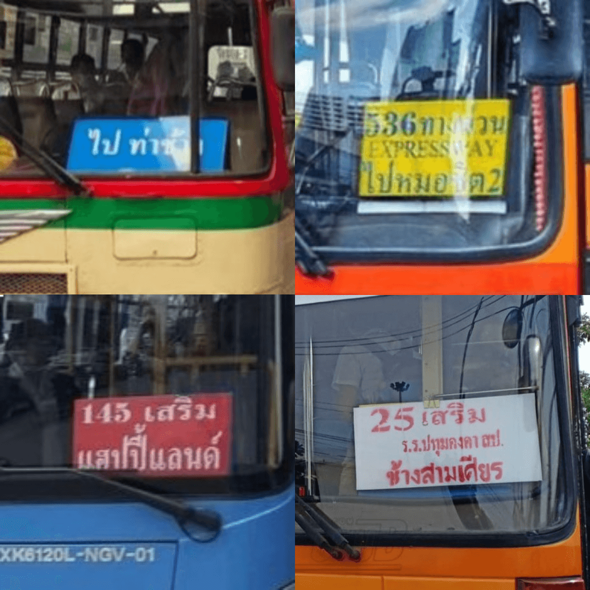

ดูให้ดี รถเสริม รถทางด่วน
การนั่งรถเมล์แต่ละทีนั้นต้องระวังให้ดีในเรื่องนี้ เพราะถ้าหากเป็นรถเสริมหรือรถทางด่วนล่ะก็ อาจจะไปไม่ถึงหรือไม่ผ่านจุดหมายปลายทางของเรา โดยการดูนั้นให้สังเกตที่ด้านหน้าของรถเมล์ จะมีป้ายสีซึ่งแต่ละสีนั้นจะมีความหมายที่แตกต่างกันไป
• สีน้ำเงิน : รถทางล่าง
• สีเหลือง : รถทางด่วน
• สีแดง : รถตัดเสริม
• สีขาว : รถเสริมพิเศษ